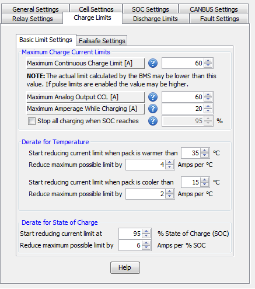

This section allows for configuring the settings related to the current limits (both charge and discharge) that the BMS will use to protect the battery pack.
This is the maximum amperage (unit is 1 amp) that the pack is allowed to accept (charge) or output (discharge). Charge amperage is current flowing in to the battery pack and discharge amperage is current flowing out of the battery pack.
Note: For increased Internal Resistance accuracy, these values should be set close to what the maximum values seen in the application are (eg: if the application will only see a maximum of 100 amp discharge, the maximum discharge limit should be around 100 amps).
This is the maximum amperage (unit is 1 amp) that 5v on the analog limit outputs represent and can be used to scale the 0-5v analog output voltage range.
This can be useful for applications capable of current limits greater than what the battery pack is capable of.
Example: Assuming the battery pack current limit is 50A and this value is set to 100A, then 2.5v would be output on the analog current limit output pin. If this value were set to 50A and the pack current limit is 50A then there would be 5.0v on the analog output line.
This is the maximum charge current limit (CCL) that the BMS will enforce when the BMS is in CHARGE mode (when Charge Power is energized to at least +12v). This allows for a different maximum charge current limit while charging than when the application is in READY mode (EG: a different limit for slow charging off the grid versus regenerative braking charging).
In some applications, it may be useful to have the charger terminate once a given pack SOC is reached instead of simply terminating at a given voltage. This can be accomplished by using the Stop Charging When SOC Reaches X option. If this is enabled the charger will stop charging once the Pack SOC reaches the Charged SOC%. The Pack SOC% must fall below this SOC in order for the charger to re-engage.
| < Limits Settings | Minimum Temperature DCL/CCL > |